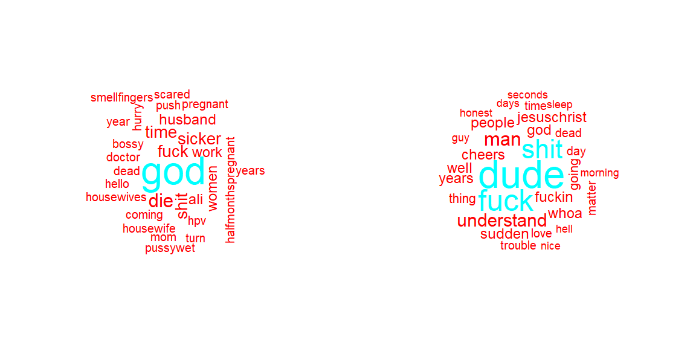
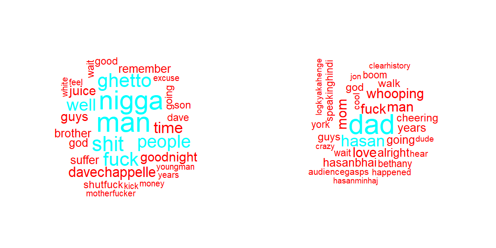
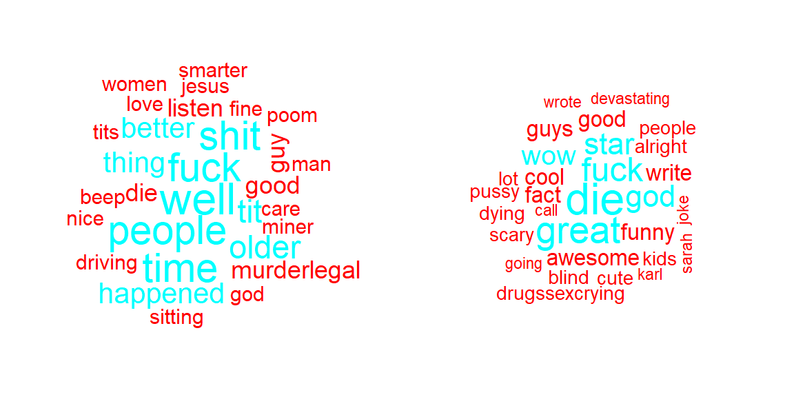
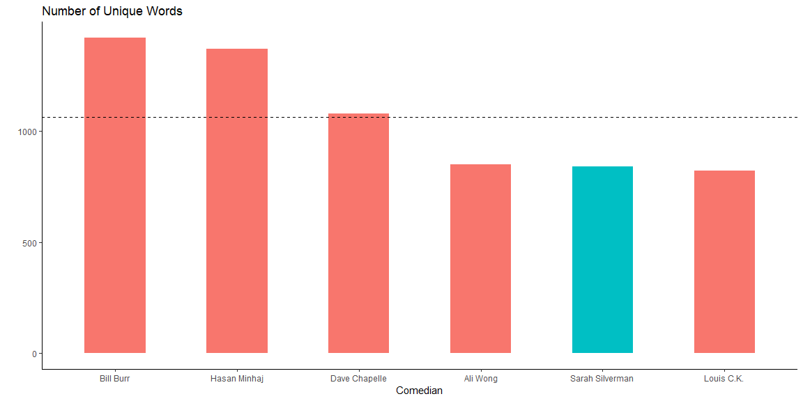
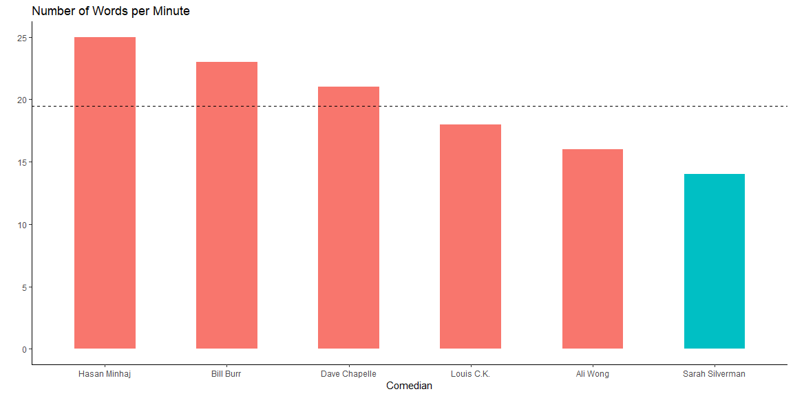
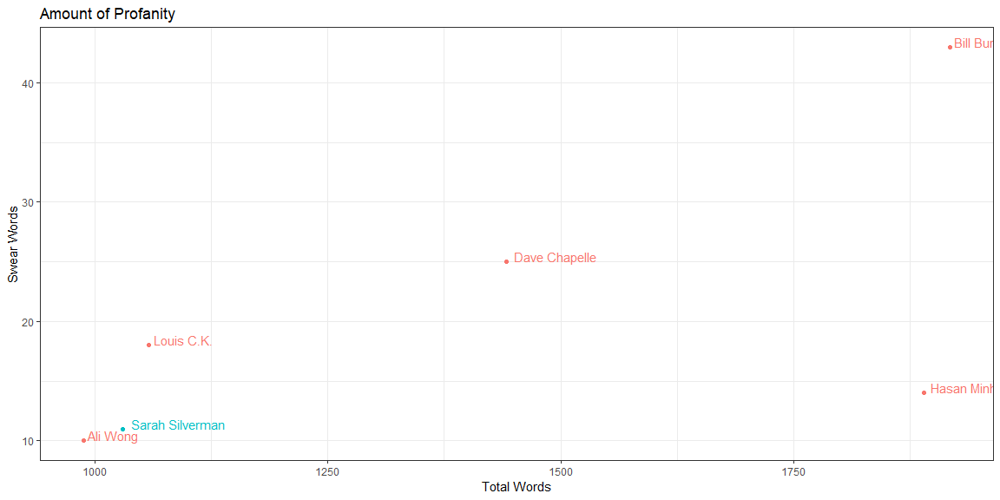
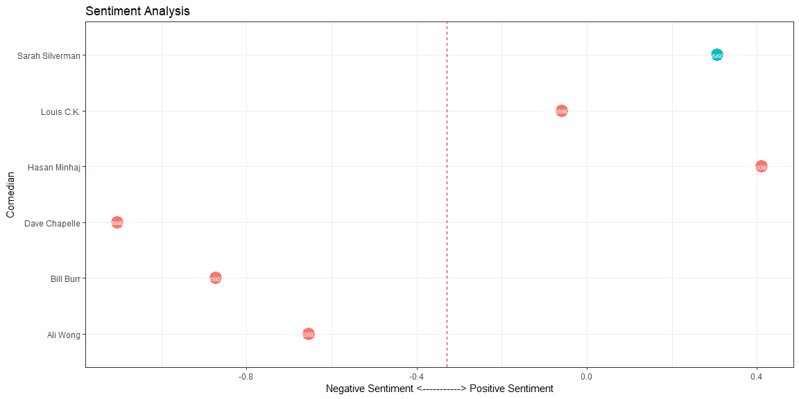

Unlike Python, R, Java and other programming languages, a natural language is a language that has naturally evolved through human history (English, Chinese, Spanish…). Natural Language Processing (NLP) is how computers process and go about these natural languages: basically how to deal with text data. It’s a branch of AI that really interests me. In this post, I’ll guide you through a basic example of how we can apply NLP techniques to Stand Up Comedy transcripts, using R.
About five years ago, I was not really into Stand Up comedy; for some reason, most of the performers’ sense of humor didn’t click with me. But that was until I discovered Sarah Silverman. There was something about her comedy that made me laugh to tears. So in this analysis I want to know: why do I like her so much? Is there something in the language that she uses that makes her different? What makes Sara Silverman’s routine stand out?
We’ll need to find the transcript of one of her comedies. My favorite is Speck of Dust so we’ll focus on finding that one. The transcript can be found here.
In that same link, I found five other famous comedians which we will compare her to. Here is the full compilation of text data we’ll use:
For a computer to read a sentence such as “Hello? Is anyone there? I thought this was 543 W 2 S”, the text should be cleaned, tokenized, and put into a matrix. So to do this we will: A. Remove punctuation B. Remove numbers C. Lowecase all letters
Our sentence then would look like this: “hello is anyone there i thought this was w s”.
#We put each transcript into one single line.
ali <- paste(readLines('ali.txt'), collapse = " ")
bill <- paste(readLines('bill.txt'), collapse = " ")
dave <- paste(readLines('dave.txt'), collapse = " ")
hasan <- paste(readLines('hasan.txt'), collapse = " ")
louis <- paste(readLines('louis.txt'), collapse = " ")
sarah <- paste(readLines('sarah.txt'), collapse = " ")
#We remove punctuation.
ali <- gsub(pattern = '\\W', replace = ' ', ali)
bill <- gsub(pattern = '\\W', replace = ' ', bill)
dave <- gsub(pattern = '\\W', replace = ' ', dave)
hasan <- gsub(pattern = '\\W', replace = ' ', hasan)
louis <- gsub(pattern = '\\W', replace = ' ', louis)
sarah <- gsub(pattern = '\\W', replace = ' ', sarah)
#We remove numbers.
ali <- gsub(pattern = '\\d', replace = ' ', ali)
bill <- gsub(pattern = '\\d', replace = ' ', bill)
dave <- gsub(pattern = '\\d', replace = ' ', dave)
hasan <- gsub(pattern = '\\d', replace = ' ', hasan)
louis <- gsub(pattern = '\\d', replace = ' ', louis)
sarah <- gsub(pattern = '\\d', replace = ' ', sarah)
#We lowercase everything.
ali <- tolower(ali)
bill <- tolower(bill)
dave <- tolower(dave)
hasan <- tolower(hasan)
louis <- tolower(louis)
sarah <- tolower(sarah)
#We remove stop words (e.g. and, or, the...)
custom_stopwords <- read.csv("stop-word-list.csv", header = FALSE)
custom_stopwords <- as.character(custom_stopwords$V1)
final_stopwords <- c(custom_stopwords, stopwords())
ali <- removeWords(ali, final_stopwords)
bill <- removeWords(bill, final_stopwords)
dave <- removeWords(dave, final_stopwords)
hasan <- removeWords(hasan, final_stopwords)
louis <- removeWords(louis, final_stopwords)
sarah <- removeWords(sarah, final_stopwords)
#Sarah value needs to have "â" removed.
sarah <- gsub(pattern = 'â', replace = ' ', sarah)
#We remove single letter words.
ali <- gsub(pattern = '\\b[a-z]\\b{1}', replace = ' ', ali)
bill <- gsub(pattern = '\\b[a-z]\\b{1}', replace = ' ', bill)
dave <- gsub(pattern = '\\b[a-z]\\b{1}', replace = ' ', dave)
hasan <- gsub(pattern = '\\b[a-z]\\b{1}', replace = ' ', hasan)
louis <- gsub(pattern = '\\b[a-z]\\b{1}', replace = ' ', louis)
sarah <- gsub(pattern = '\\b[a-z]\\b{1}', replace = ' ', sarah)
#Clean up extra white space.
ali <- stripWhitespace(ali)
bill <- stripWhitespace(bill)
dave <- stripWhitespace(dave)
hasan <- stripWhitespace(hasan)
louis <- stripWhitespace(louis)
sarah <- stripWhitespace(sarah)#We put our new variables into a table
Comedian <- c("Ali Wong", "Bill Burr", 'Dave Chapelle', 'Hasan Minhaj', 'Louis C.K.', 'Sarah Silverman')
Transcript <- c(ali, bill, dave, hasan, louis, sarah)
clean_transcripts <- data.frame(Comedian, Transcript, stringsAsFactors = FALSE)
#We split the transcript into separate words
ali_bag <- str_split(ali, pattern = "\\s+")
bill_bag <- str_split(bill, pattern = "\\s+")
dave_bag <- str_split(dave, pattern = "\\s+")
hasan_bag <- str_split(hasan, pattern = "\\s+")
louis_bag <- str_split(louis, pattern = "\\s+")
sarah_bag <- str_split(sarah, pattern = "\\s+")
#We unlist the variables above to make a bag of words (single char vectors)
ali_bag <- unlist(ali_bag)
bill_bag <- unlist(bill_bag)
dave_bag <- unlist(dave_bag)
hasan_bag <- unlist(hasan_bag)
louis_bag <- unlist(louis_bag)
sarah_bag <- unlist(sarah_bag)We’ll use word clouds to visualizae the 30 words each comedian used the most in the performance.
par(mfrow = c(1,2))
wordcloud(ali, max.words = 30, random.order = FALSE, colors = rainbow(2))
wordcloud(bill, max.words = 30, random.order = FALSE, colors = rainbow(2))
wordcloud(dave, max.words = 30, random.order = FALSE, colors = rainbow(2))
wordcloud(hasan, max.words = 30, random.order = FALSE, colors = rainbow(2))
wordcloud(louis, max.words = 30, random.order = FALSE, colors = rainbow(2))
wordcloud(sarah, max.words = 30, random.order = FALSE, colors = rainbow(2))
Here the goal is to find how big of a vocabulary each comedian has. We do this by checking the amount of unique words they use.
ali_unique <- n_distinct(ali_bag)
bill_unique <- n_distinct(bill_bag)
dave_unique <- n_distinct(dave_bag)
hasan_unique <- n_distinct(hasan_bag)
louis_unique <- n_distinct(louis_bag)
sarah_unique <- n_distinct(sarah_bag)
ali_total <- length(ali_bag)
bill_total <- length(bill_bag)
dave_total <- length(dave_bag)
hasan_total <- length(hasan_bag)
louis_total <- length(louis_bag)
sarah_total <- length(sarah_bag)
### On the internet, we find out what each performance lasts
ali_time <- 60
bill_time <- 80
dave_time <- 67
hasan_time <- 73
louis_time <- 58
sarah_time <- 72
###Now we can determine the comedians speed(words per min)
ali_speed <- as.integer(ali_total/ali_time)
bill_speed <- as.integer(bill_total/bill_time)
dave_speed <- as.integer(dave_total/dave_time)
hasan_speed <- as.integer(hasan_total/hasan_time)
louis_speed <- as.integer(louis_total/louis_time)
sarah_speed <- as.integer(sarah_total/sarah_time)
##Now let's put all of that in a table
Unique_words <- c(ali_unique, bill_unique, dave_unique, hasan_unique, louis_unique, sarah_unique)
Total_words <- c(ali_total, bill_total, dave_total, hasan_total, louis_total, sarah_total)
Time <- c(ali_time, bill_time, dave_time, hasan_time, louis_time, sarah_time)
Speed <- c(ali_speed, bill_speed, dave_speed, hasan_speed, louis_speed, sarah_speed)
transcripts_stats <- data.frame(Comedian, Unique_words, Total_words, Time, Speed)
datatable(transcripts_stats)transcripts_stats <- transcripts_stats %>%
mutate(highlight_sarah = ifelse(Comedian == 'Sarah Silverman', T, F))
par(mfrow = c(1,2))
ggplot(transcripts_stats, aes(x = reorder(Comedian, -Unique_words), y = Unique_words)) +
geom_bar(stat="identity", width = 0.5, aes(fill= highlight_sarah)) +
labs(title="Number of Unique Words") +
theme(axis.text.x = element_text(angle=65, vjust=0.6)) +
theme_classic() +
ylab('') +
xlab('Comedian')+
geom_hline(yintercept=mean(Unique_words), linetype="dashed", color = "black") +
theme(legend.position = 'none')
ggplot(transcripts_stats, aes(x = reorder(Comedian, -Speed), y = Speed)) +
geom_bar(stat="identity", width = 0.5, aes(fill= highlight_sarah)) +
labs(title="Number of Words per Minute") +
theme(axis.text.x = element_text(angle=65, vjust=0.6)) +
theme_classic() +
ylab('') +
xlab('Comedian')+
geom_hline(yintercept=mean(Speed), linetype = "dashed", color = "black") +
theme(legend.position = 'none')
These two findings could explain why I like Sarah: it makes sense that me as an English as a Second Languange learner would gravitate towards those who use a simple vocabulary as well as speak slowlier.
Now we’ll look at the amount of profanity the comedians use.
ali_bad <- length(which(ali_bag == "fuck")) + length(which(ali_bag == "shit")) + length(which(ali_bag == "fucking"))
bill_bad <- length(which(bill_bag == "fuck")) + length(which(bill_bag == "shit")) + length(which(bill_bag == "fucking"))
dave_bad <- length(which(dave_bag == "fuck")) + length(which(dave_bag == "shit")) + length(which(dave_bag == "fucking"))
hasan_bad <- length(which(hasan_bag == "fuck")) + length(which(hasan_bag == "shit")) + length(which(hasan_bag == "fucking"))
louis_bad <- length(which(louis_bag == "fuck")) + length(which(louis_bag == "shit")) + length(which(louis_bag == "fucking"))
sarah_bad <- length(which(sarah_bag == "fuck")) + length(which(sarah_bag == "shit")) + length(which(sarah_bag == "fucking"))
Swear_words <- c(ali_bad, bill_bad, dave_bad, hasan_bad, louis_bad, sarah_bad)
transcripts_stats <- data.frame(Comedian, Unique_words, Total_words, Time, Swear_words)
datatable(transcripts_stats)transcripts_stats <- transcripts_stats %>%
mutate(highlight_sarah = ifelse(Comedian == 'Sarah Silverman', T, F))
ggplot(transcripts_stats,
aes(x = Total_words ,
y = Swear_words,
color = 'skyblue',
label = Comedian)) +
geom_point(aes(
color = highlight_sarah)) +
geom_text(aes(label = Comedian,
color = highlight_sarah),
hjust = -0.09,
vjust = 0) +
theme_bw() +
ylab('Swear Words') +
xlab('Total Words') +
ggtitle('Amount of Profanity') +
theme(legend.position = 'none')
1.Sarah Silverman doesn’t use a lot of profanity in her performances (1 swear word every 94 words)
These makes sense since I don’t find swear words funny just because it’s swear word. If used too much, I may even find it too distracting.
Using NLP techniques, we’ll discover how positive or negative the comedians are in their performances as well as how opinionated they are.
ali_score <- sentiment(ali)
bill_score <- sentiment(bill)
dave_score <- sentiment(dave)
hasan_score <- sentiment(hasan)
louis_score <- sentiment(louis)
sarah_score <- sentiment(sarah)
Sentiment <- c(ali_score$sentiment, bill_score$sentiment,dave_score$sentiment,hasan_score$sentiment,louis_score$sentiment,sarah_score$sentiment)
transcripts_stats <- data.frame(Comedian, Unique_words, Total_words, Time, Swear_words, Sentiment)
transcripts_stats <- transcripts_stats %>%
mutate(highlight_sarah = ifelse(Comedian == 'Sarah Silverman', T, F))
datatable(transcripts_stats)ggplot(transcripts_stats,
aes(x = Comedian,
y = Sentiment,
label= Sentiment)) +
geom_point(stat = 'identity',
aes(col = highlight_sarah), size=6) +
geom_text(color="white", size=2) +
labs(title="Sentiment Analysis") +
ylab("Negative Sentiment <-----------> Positive Sentiment") +
geom_hline(yintercept = mean(Sentiment), linetype = "dashed", color = "red") +
coord_flip() +
theme_bw() +
theme(legend.position = 'none')
After reviewing all visualizations, we conclude a comedian that meets the following criteria will probably be funny to me:
So these are the results (following the order of the list above):
Therefore, we conclude that Louis C.K. performance might be a great fit.